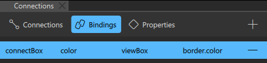
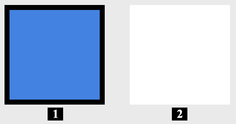
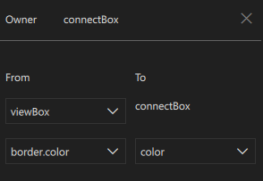
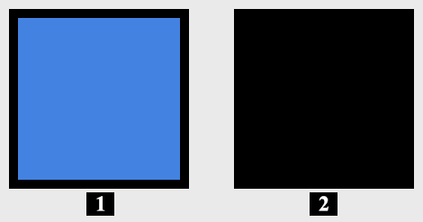

Adding Bindings Between Properties
To dynamically change the behavior of a component, you can create a binding between the properties of two components. To create a property binding, a property is assigned a JavaScript expression that evaluates to the desired value. Behind the scenes, the variables in the binding expression are monitored. When a change is detected, the binding expression is re-evaluated and the new result is applied to the property.
At its simplest, a binding may be a reference to another property. For example, the height of a component can be bound to the height of its parent, so that when the parent height changes, the component height is adjusted automatically.
For more information about the use of property bindings, see Property Binding.
You can create bindings between components in Bindings.

Creating Bindings Between Component Properties
To bind a property of a component to the property of another component:
- Place two components in the 2D view.

- Name the first component as viewBox.
- Name the second component as connectBox.
- Apply a thick black Border and a blue Color to the viewBox component.
- Select the connectBox component.
- Select Bindings from the Connections view.
- Select the
 (Add) button to add a binding to the currently selected component.
(Add) button to add a binding to the currently selected component.
- From the pop-up Bindings editor, in the From section, select viewBox as the parent component, then select its border.color property.
- In the To section you find the connectBox component already selected as the target component. Select color from the drop-down below to set its affected property.
- You see the border.color of the viewBox component instantly getting applied to the color of the connectBox component.

All the Bindings connections have automated JavaScript expression in the Code view. For more information, see Setting Bindings.
For examples of creating property bindings, see:
Summary of Logical Operators
You can use the following logical operators in the expressions to combine several conditions in one expression:
| Operator | Meaning | Evaluates to true if |
|---|---|---|
| ! | NOT | The condition is not met. |
| && | AND | Both conditions are met. |
| || | OR | Either of the conditions is met. |
| < | Less than | The left operand is less than the right operand. |
| > | Greater than | The left operand is greater than the right operand. |
| >= | Greater than or equal | The left operand is greater than or equal to the right operand. |
| <= | Less than or equal | The left operand is less than or equal to the right operand. |
| == | Equal | The operands are equal. |
| === | Strict equal | The operands are equal and of the same type. |
| != | Not equal | The operands are not equal. |
| !== | Strict not equal | The operands are of the same type but not equal, or are of different type. |
Alternatively, you can use And Operator, Or Operator, and Not Operator components to bind property values using the boolean AND, OR, and NOT operator. For more information, see Logic Helpers.
In addition, you can use arithmetic operators to compare numbers before checks. However, we recommend that you create separate properties for this purpose whenever possible.